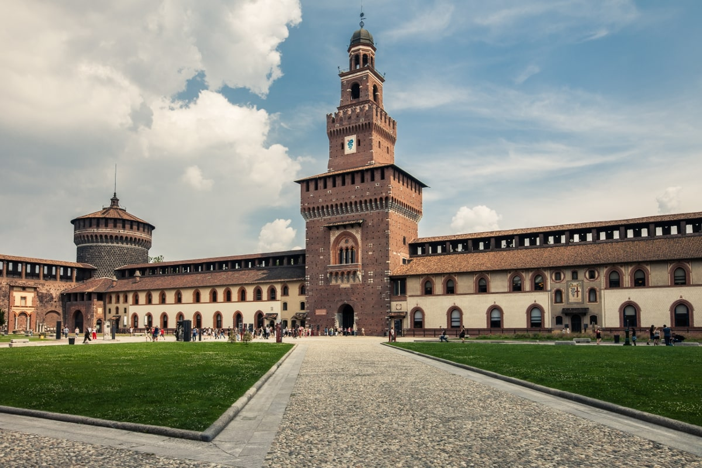

MILAN
Milán es una metrópolis de la región de Lombardía en el norte de Italia y es una capital mundial de la moda y el diseño. En ella se encuentra la bolsa de valores nacional y es un núcleo financiero también conocido por sus exclusivos restaurantes y tiendas.

Dominique: Mundialmente conocida como una de las grandes capitales de la moda, Milán es una ciudad que también cuenta con un amplio abanico de actividades culturales y de ocio.
La catedral de Milán es una catedral gótica emplazada en la ciudad homónima. Es la sede episcopal de la Archidiócesis de Milán. Es una de las iglesias de culto católico más grandes del mundo y las ventanas del coro tienen la reputación de ser las mayores que se conocen.
La Galería de Víctor Manuel II es un edificio formado por dos arcadas perpendiculares con bóveda de vidrio que se cruzan formando un octágono; es un espacio singular situado en el lado norte de la Piazza del Duomo en Milán, que conecta con la Piazza della Scala.
El Castillo Sforzesco es un castillo que se encuentra en el casco antiguo de Milán, Italia, y que actualmente alberga un museo de arte. La construcción original en el lugar comenzó en el siglo XV. En 1450, Francisco Sforza comenzó a reconstruirlo, y fue modificado por generaciones posteriores.
El Teatro alla Scala de Milán es uno de los teatros de ópera más famosos del mundo. La temporada del teatro suele iniciarse el 7 de diciembre, día de San Ambrosio, santo patrón de Milán.
La Pinacoteca de Brera es una colección de arte situada en Milán, norte de Italia. Contiene una de las más destacadas colecciones de pintura italiana, una consecuencia del programa cultural de la Academia de Bellas Artes de Brera, que comparte su sitio en el Palazzo Brera.